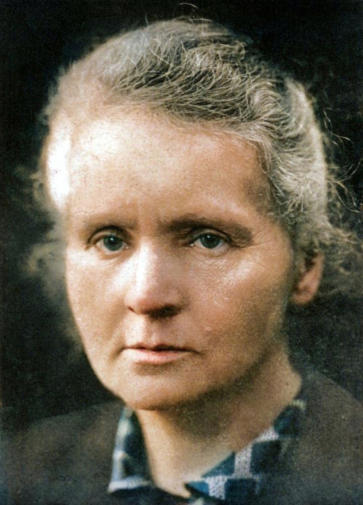

Galileu Galilei
Século: XVI–XVII
Reconhecido como um dos pioneiros do método experimental, formulou as leis da queda livre e, com o telescópio, forneceu evidências que reforçaram o modelo heliocêntrico.

Isaac Newton
Século: XVII–XVIII
Formulou as três Leis do Movimento e a Lei da Gravitação Universal, além de desenvolver, de forma independente, o cálculo diferencial, trabalho que, em paralelo, também foi realizado por Leibniz.
James Clerk Maxwell
Século: XIX
Suas quatro equações unificaram eletricidade, magnetismo e luz, prevendo ondas eletromagnéticas que sustentam as telecomunicações modernas.
Max Planck
Século: XIX–XX
Introduziu a hipótese dos quanta em 1900, fundamento da mecânica quântica, e recebeu o Nobel de Física em 1918.

Marie Curie
Século: XIX–XX
Pioneira no estudo da radioatividade; isolou polônio e rádio e foi a primeira pessoa a ganhar dois Prêmios Nobel (Física 1903, Química 1911).

Albert Einstein
Século: XX
Desenvolveu as teorias da relatividade especial e geral, explicou o efeito fotoelétrico e recebeu o Nobel de Física de 1921.
Niels Bohr
Século: XX
Propôs o modelo atômico quantizado que explicou as linhas espectrais do hidrogênio, formulou o princípio da complementaridade e recebeu o Nobel de Física de 1922.